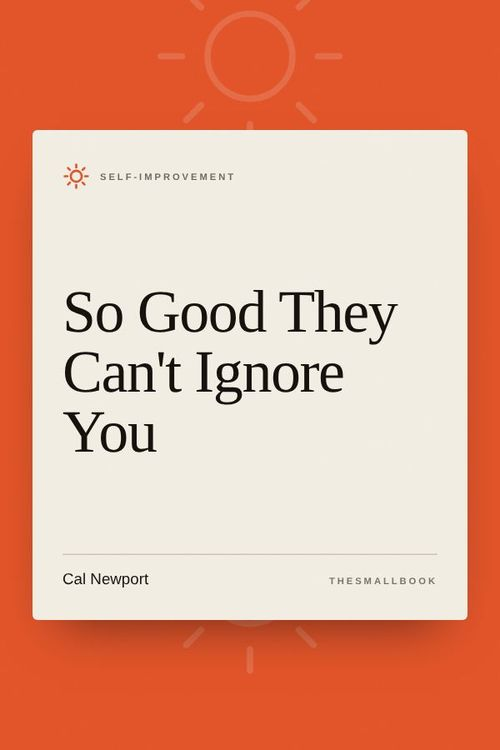

Library › Ask the Library › How do I grow my career?
How do I grow my career?
The short answer
Don't follow passion, follow skill. Build rare, valuable career capital, and the control, autonomy and opportunities follow.
The books behind the answer

So Good They Can't Ignore You
Cal Newport · 2012 · 8 min · 6 lessons
Don't follow your passion - bring it with you. Build career capital through deliberate practice, then cash it in for autonomy and mission.
- Career Capital: Get so good they can't ignore you. Rare and valuable skills are the currency of career freedom.

Deep Work
Cal Newport · 2016 · 9 min · 7 lessons
Deep work is rare exactly when it's most valuable. Master focus, and you're competing against almost nobody.
- The Deep Work Hypothesis: Deep work is the skill that makes other skills possible. Protect it like a salary.

Mastery
Robert Greene · 2012 · 8 min · 6 lessons
Mastery isn't genetics - it's a repeatable path: find your life's task, serve the apprenticeship, absorb mentors, master people, and fuse it all into intuition.
- The Apprenticeship: Every master served years of boring apprenticeship. Fall in love with the practice, not the praise.

The 7 Habits of Highly Effective People
Stephen R. Covey · 1989 · 9 min · 7 lessons
Effectiveness isn't a technique - it's character. Win the private battle first, then the public one.
- Be Proactive: Between stimulus and response is your power to choose. Proactive people own their careers.
A failure that proves it
Why did DeLorean Motor Company fail?
1982 · STARTUP · Loss: $175M + founder's reputation
BlackBerry owned the smartphone market, then ignored the shift to touchscreens. Careers die the same way: refusing to reskill.
A great story doesn't survive bad build quality. And desperation is the most expensive state to make decisions in - it turns founders into marks.
Also asked in Hindi and Hinglish
People also ask this as: career mein growth kaise karein, job mein promotion kaise milega. The answer on this page stays in simple English, and the live book can be read in Hindi or Hinglish.
Questions people ask next
Can I read this in Hindi?
Yes. This answer is written in simple English. Open any linked book and choose Hindi or Hinglish to read the full lessons in your language, with audio where available.